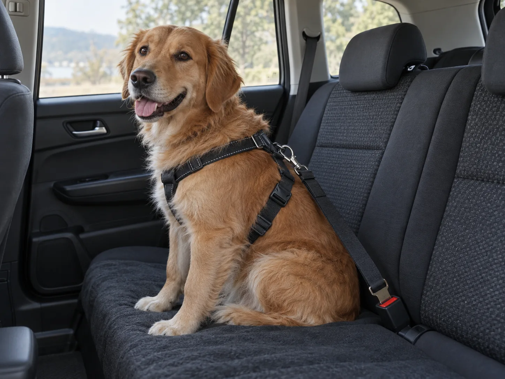
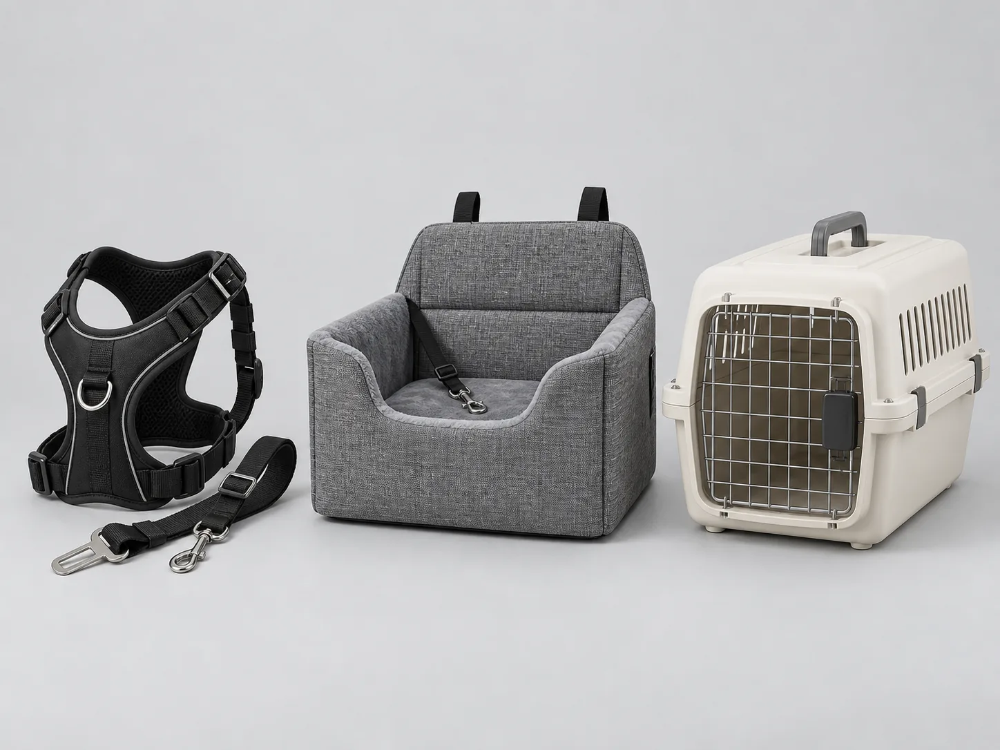
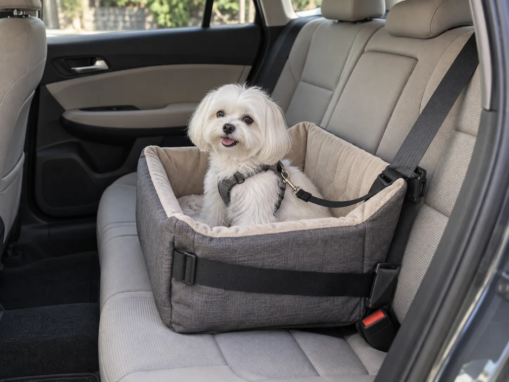
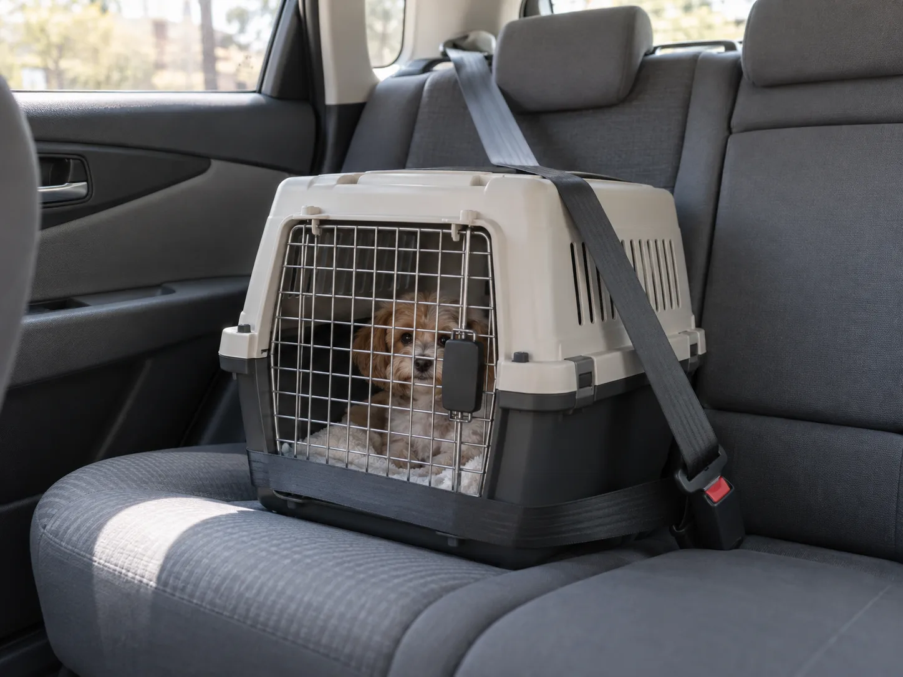
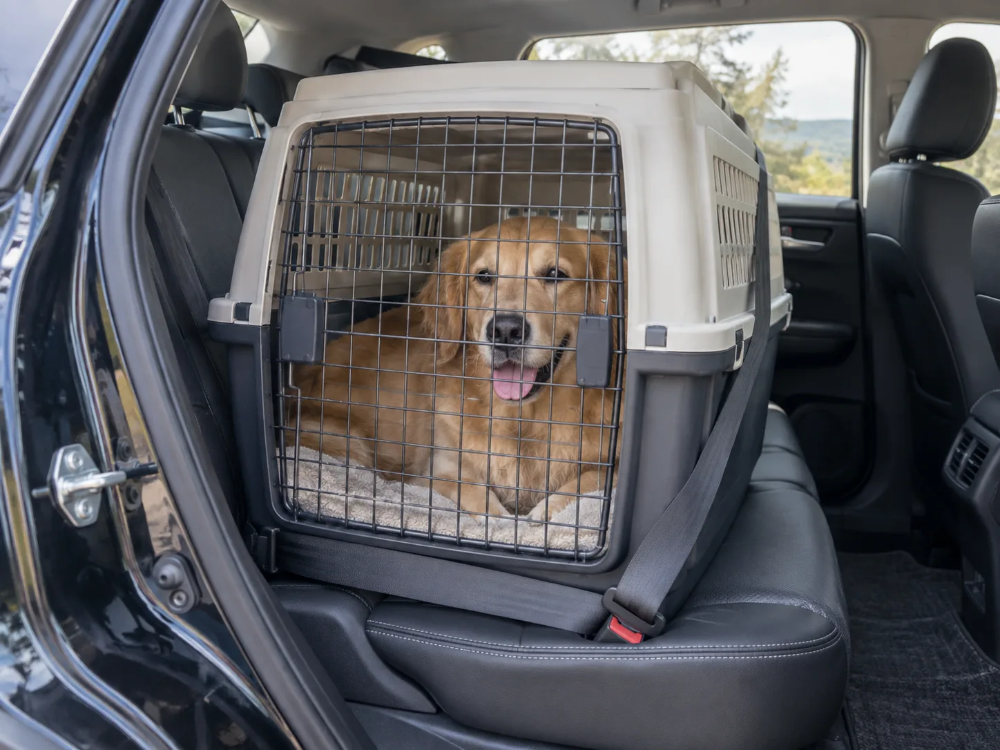
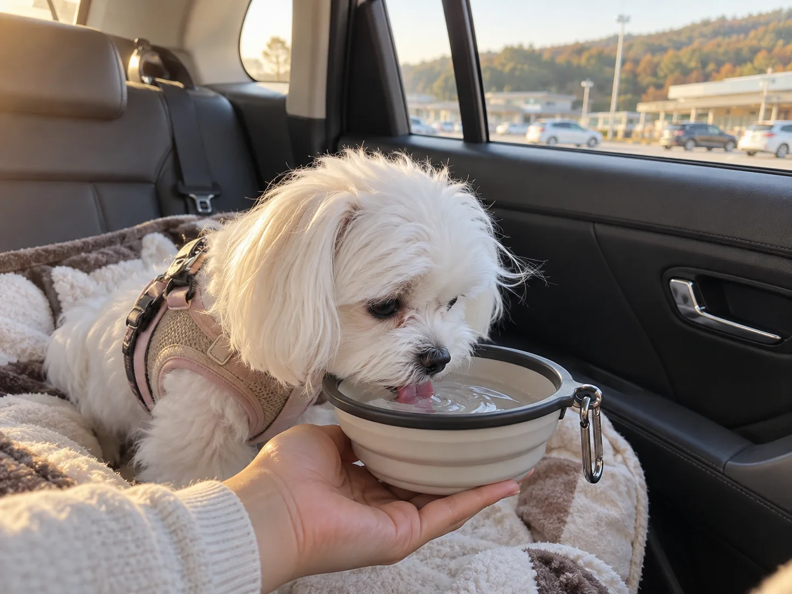

▲ 하네스 등쪽 D링에 연결 스트랩을 걸어 차량 안전벨트에 고정하면 급제동 시 몸이 앞으로 튀어나가는 것을 막을 수 있다
1. "무릎에 안고 타면 범칙금"… 그런데 그다음이 진짜 문제다
도로교통법 제39조 제5항은 영유아나 동물을 안은 상태로 운전 장치를 조작하는 행위를 금지한다. 위반 시 승용차 기준 범칙금 4만 원(승합차 5만 원, 이륜차 3만 원)이 부과되고, 형사처벌 조항(제156조 제1호, 제162조, 시행령 제93조)에 따라 20만 원 이하의 벌금이나 구류·과료까지 적용될 수 있다. 여기까지는 이미 많이 알려진 이야기다.
문제는 안고 타지만 않으면 안전한가라는 부분이다. 안전조치 없이 좌석에 그냥 앉힌 반려동물은 급제동이나 급회전 때 운전석 쪽으로 튕겨 나가거나, 창문이 열려 있으면 뛰어내릴 수 있다. 실제로 법제처의 '찾기쉬운 생활법령정보'는 반려동물과 버스·전철·기차 등 대중교통을 이용할 때 이동장비에 넣는 등 안전조치를 취하도록 권고하고 있다. 자가용에 대해서는 '안고 운전하지 말 것' 외에 법령상 구체적인 장비 규정이 따로 없지만, 반려동물을 안지 않고도 안전하게 태우려면 결국 같은 원리 — 몸을 고정하거나 이동장비에 넣는 방식 — 이 필요하다. 이 '안전조치'로 뭉뚱그려 불리는 장비들 — 하네스, 전용 카시트, 이동장 — 이 서로 얼마나 다른 보호 성능을 가지는지는 잘 다뤄지지 않는다. 이번 기사는 바로 그 장비 자체의 구조와 성능 차이에 집중한다.

▲ 하네스형·카시트형·이동장형 — 반려동물 차량 동승 안전장비는 크게 이 세 종류로 나뉜다 ⓒ 카프리즘
2. 하네스형 — 가장 흔하지만, 아무거나 채우면 소용없다
하네스형은 반려동물이 평소 산책용으로 착용하는 가슴줄(하네스)의 등쪽 D링에 짧은 연결 스트랩(카시트 벨트 클립)을 걸고, 그 반대쪽 끝을 차량 안전벨트 버클에 꽂아 고정하는 방식이다. 목줄(칼라)에 직접 연결하면 급제동 시 목이 꺾이거나 기도가 눌릴 수 있어, 반드시 몸통 전체를 감싸는 하네스에 연결해야 한다.
부피가 작아 휴대와 탈부착이 간편하고, 이동 중 앉거나 엎드리는 등 자세를 어느 정도 바꿀 수 있다는 게 장점이다. 반면 저가형 제품은 충돌 시 봉제선이 뜯어지거나 버클이 풀리면서 반려동물이 좌석 밖으로 튕겨 나가는 사례가 실제 충돌 테스트에서 다수 확인됐다 — 이 부분은 아래 3번 항목에서 수치로 다룬다.
📍 목줄이 아니라 하네스에, 몸통 전체를 감싸는 제품으로
사람용 안전벨트를 반려동물에게 직접 채우는 것도 권장되지 않는다. 사람 체형에 맞춰진 벨트는 동물의 목이나 가슴에 그대로 하중이 실려 오히려 부상을 키울 수 있다. 하네스는 가슴과 어깨 부위에 하중을 분산시키도록 설계된 제품을 쓰고, 연결 스트랩의 길이는 차 안에서 고개를 창밖으로 완전히 내밀 수 없을 정도로 짧게 조절하는 것이 안전하다.
3. 전용 카시트형 — 소형견에게 특히 유리한 이유
전용 카시트(붐 시트·부스터형)는 쿠션과 벽면이 있는 박스형 시트를 뒷좌석에 안전벨트로 고정하고, 그 안에 반려동물을 태운 뒤 시트 내부의 보조 스트랩을 하네스와 다시 한번 연결하는 이중 구조가 일반적이다. 시트 자체가 완충재 역할을 하면서 동시에 하네스가 2차 이탈을 막아주는 셈이다.

▲ 전용 카시트는 시트 자체를 안전벨트로 고정하고, 시트 내부 스트랩을 하네스와 다시 연결하는 이중 구조가 일반적이다 ⓒ 카프리즘
좌석 높이가 있어 창밖 시야를 확보할 수 있고, 소형~중형견 기준으로는 쿠션감 덕분에 멀미나 불안감을 줄이는 데도 도움이 된다는 평가가 많다. 다만 시트 자체의 부피가 크고, 대형견은 애초에 들어가지 않는 제품이 대부분이다. 또한 시트를 고정하는 벨트·버클의 강성이 제품마다 크게 달라, 저가형은 급제동 시 시트 자체가 좌석 위에서 밀리는 경우도 있다.
4. 이동장(켄넬)형 — 가장 단단하지만, 고정하지 않으면 오히려 위험하다
이동장(켄넬)은 경질 플라스틱이나 견고한 소재로 만든 밀폐형 케이지에 반려동물을 넣고, 케이지 본체를 안전벨트나 별도 고정 스트랩으로 좌석에 묶는 방식이다. 동물보호법 시행규칙은 동물 이동장치에 대해 동물이 탈출할 수 없는 잠금장치와 충격에 쉽게 파손되지 않는 견고한 재질을 갖추도록 규정하고 있는데, 이 기준을 충족하는 경질 이동장은 사방이 막힌 구조 덕분에 충돌 시 반려동물을 캡슐처럼 감싸 보호하는 효과가 가장 크다.

▲ 이동장은 본체를 안전벨트로 좌석에 고정해야 충돌 시 관성으로 미끄러지거나 튕겨 나가는 것을 막을 수 있다 ⓒ 카프리즘
⚠️ 이동장을 쓰면서 가장 흔한 실수
· 고정하지 않고 그냥 얹어만 둠 — 벨트로 묶지 않은 이동장은 급제동 시 그 자체가 수십 킬로그램짜리 물체가 되어 앞좌석이나 탑승자를 향해 날아갈 수 있습니다
· 트렁크에 고정 없이 적재 — 트렁크에 실을 때도 화물 고정벨트나 트렁크 전용 칸막이로 미끄러짐을 막아야 합니다
· 조수석 배치 — 에어백이 있는 조수석은 반려동물 이동장 위치로 권장되지 않습니다, 반드시 뒷좌석에 고정하세요
5. 세 장비, 한눈에 비교 — 대형견과 소형견은 고르는 기준부터 다르다
세 방식 모두 '반려동물 안전장비'로 불리지만 구조와 적합 대상이 다르다. 반려동물의 크기와 성격, 주로 타는 차종을 기준으로 아래 표에서 비교해볼 수 있다.

▲ 대형견은 전용 카시트에 들어가지 않는 경우가 많아, 체구에 맞는 대형 이동장을 안전벨트로 단단히 고정하는 방식이 현실적인 대안이 된다 ⓒ 카프리즘
체구에 따라 적합한 장비 자체가 달라진다는 점도 놓치기 쉽다. 소형견은 하네스형이나 전용 카시트 모두 선택지가 넓고, 특히 카시트형은 붐 시트 구조 덕분에 창밖 시야를 확보하면서도 쿠션감 있게 이동할 수 있어 불안감이 큰 소형견에게 유리하다. 반면 대형견은 애초에 시중 전용 카시트에 들어가는 제품이 많지 않다. 체중 20~30kg을 넘어가는 대형견이라면 하네스형 중에서도 연결 스트랩과 봉제선의 하중 한계(정격 체중)를 반드시 확인해야 하고, 하네스만으로 불안하다면 대형 사이즈 이동장을 안전벨트나 전용 고정 스트랩으로 트렁크 또는 뒷좌석 바닥에 결박하는 방식이 더 현실적인 대안이 된다. 같은 이유로 제품을 고를 때는 '소형견용', '중형견용' 같은 표기보다 제조사가 명시한 최대 하중(kg) 수치를 직접 확인하는 것이 안전하다.
| 유형 | 구조 | 적합한 체구 | 장점 | 단점 |
|---|---|---|---|---|
| 하네스형 | 몸에 착용한 하네스를 연결 스트랩으로 안전벨트에 고정 | 소형~대형(제품별 사이즈 상이) | 부피 작음, 휴대·탈부착 간편, 자세 변경 자유로움 | 저가형은 봉제선·버클 파손 시 이탈 위험 큼 |
| 전용 카시트형 | 박스형 시트를 벨트로 고정, 내부 스트랩을 하네스와 재연결 | 소형~중형 위주 | 쿠션감·시야 확보, 하네스와 이중 보호 | 부피 큼, 대형견 대부분 사용 불가 |
| 이동장(켄넬)형 | 밀폐형 케이지 본체를 안전벨트·고정벨트로 좌석에 결박 | 소형~대형(사이즈별 대응) | 사방이 막혀 있어 충돌 시 보호 범위 가장 넓음, 항공·대중교통 겸용 가능 | 부피·무게 가장 큼, 벨트로 고정 안 하면 오히려 위험 |
📍 가격만 보고 고르면 안 되는 이유
하네스는 대체로 만 원대부터, 전용 카시트는 수만 원대, 이동장은 소재와 크기에 따라 수만 원대부터 형성돼 있다. 하지만 가격과 충돌 안전성이 비례하지 않는 경우가 많다. 다음 항목의 충돌 테스트 결과가 그 이유를 보여준다.
6. 숫자로 본 신뢰도 — 크래시 테스트에서 드러난 진실
미국의 반려동물 안전 연구기관 Center for Pet Safety(CPS)는 2013년 자동차 제조사 스바루(Subaru)와 함께 시중 유통 중인 반려견 하네스 12개 브랜드를 대상으로 충돌 테스트를 진행했다. 결과는 예상보다 훨씬 나빴다.
| 구분 | 결과 |
|---|---|
| 테스트 대상 | 12개 브랜드 하네스 |
| 예비 테스트 탈락 | 4개 |
| 정식 충돌시험 진행 | 8개 |
| 최종 '최고 성능' 판정 | 1개(Sleepypod Clickit Utility) |
| 주요 탈락 사유 | 충돌 시 좌석 이탈, 하드웨어·봉제선 파손, 머리 변위(head excursion) 기준 초과, 하네스 본체 변형 |
테스트를 통과하지 못한 제품 다수는 충돌 순간 반려동물이 좌석에서 이탈해 앞좌석 쪽으로 튕겨 나가는 2차 충격 위험이 확인됐다. '크래시 테스트'나 '충돌 인증' 문구를 제품 설명에 붙여놓고도 실제로는 독립 기관의 검증을 거치지 않은 제품이 시중에 적지 않다는 뜻이다. CPS는 이후에도 인증 프로그램을 이어가고 있으며, 최근에는 하네스뿐 아니라 이동장·카시트 라인업에 대해서도 별도의 충돌 테스트 인증(CPS Certified)을 부여하고 있다.
한국에는 아직 이런 반려동물 카시트·하네스 충돌 테스트를 수행하는 공인 기관이 없다. 제품을 고를 때 해외 인증 마크나 충돌 테스트 결과를 공개한 브랜드인지 확인하는 절차가 필요한 이유다. CPS의 인증 제품 목록은 아래에서 직접 확인할 수 있다. CPS 인증 제품 목록 바로가기
7. 멀미하는 반려동물, 장비만으로는 해결되지 않는다
안전장비를 제대로 갖췄는데도 차만 타면 침을 흘리거나 헐떡이고, 구토까지 하는 반려동물이 있다. 반려동물의 차멀미는 대부분 귀 안쪽 평형기관이 아직 차량의 흔들림에 익숙하지 않거나, 과거 병원 방문 등 차량 탑승과 관련된 불안한 경험이 누적돼 생긴다. 장비가 몸을 고정해주더라도 멀미 자체를 막아주지는 못하기 때문에 별도의 대처가 필요하다.

▲ 장거리 이동 시에는 2~3시간마다 휴게소에 들러 물을 주고 잠깐 환기시키는 것만으로도 멀미 증상을 크게 줄일 수 있다 ⓒ 카프리즘
📍 차멀미, 이렇게 줄일 수 있다
탑승 전 최소 2~3시간은 사료를 적게 주거나 공복 상태를 유지하면 구토 위험이 줄어든다. 이동장이나 카시트는 시야가 심하게 흔들리지 않는 뒷좌석 가운데 자리에 배치하는 것이 좋고, 창문을 살짝 열어 환기를 시키면 압력 변화로 인한 불편함을 줄이는 데 도움이 된다. 장거리 이동이라면 2~3시간마다 안전한 곳에 정차해 물을 주고 잠깐 몸을 풀어주는 것이 좋으며, 급가속·급제동을 줄이는 운전 습관 자체도 멀미 완화에 직접적인 영향을 준다. 증상이 심하고 반복된다면 장거리 이동 전 수의사와 상담해 멀미 완화 처방을 받는 것도 방법이다.
8. 정리 — '채웠다'가 아니라 '고정됐다'가 기준이다
반려동물을 무릎에 안고 운전하면 범칙금 대상이라는 사실은 이제 많이 알려졌다. 하지만 안고 있지만 않으면 안전한 것은 아니다. 하네스를 채웠어도 연결 스트랩이 목줄에 걸려 있거나, 저가형 버클이 충돌 순간 풀리면 보호 효과는 거의 없다. 전용 카시트도 시트 자체가 좌석에 단단히 고정돼 있지 않으면 시트째로 밀린다. 이동장 역시 문을 잠갔다고 끝이 아니라, 본체가 벨트로 좌석에 묶여 있어야 비로소 의미가 있다.
세 가지 방식 중 정답은 하나가 아니다. 소형견이고 이동 거리가 짧다면 하네스만으로도 충분할 수 있고, 불안감이 큰 반려동물이라면 전용 카시트가, 장거리 이동이나 대형견이라면 이동장이 더 적합할 수 있다. 다만 어떤 방식을 고르든 제품이 실제 충돌 테스트를 거쳤는지, 몸에 맞는 사이즈인지, 차량에 제대로 고정됐는지 — 이 세 가지를 확인하는 것이 '채우기만 하면 끝'이라는 생각보다 훨씬 중요하다.